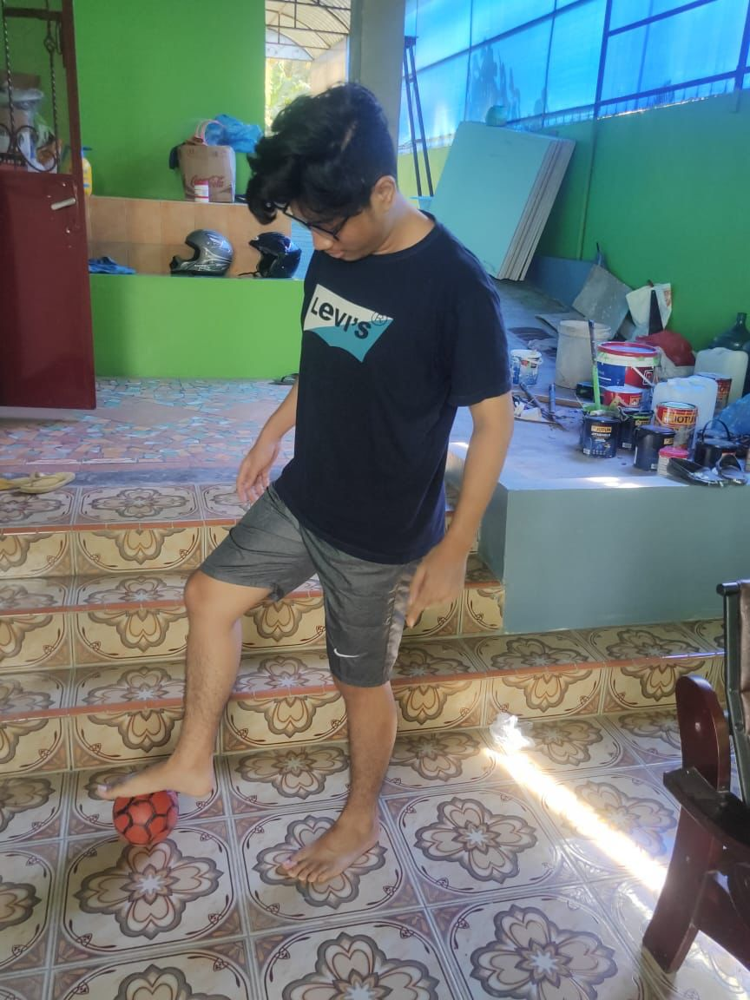

Profil Mahasiswa

Data diri
Nama
:
Raja pranata panjaitan
Tempat, Tanggal Lahir
:
Pematangsiantar 25 november 2002
Agama
:
Atheist
Jenis Kelamin
:
She/Them
Jurusan
:
Informatika
NIM
:
123200060
Alamat
:
Jalan Babarsari no 13
Tentang Saya
Kegiatan saya sehari hari tidur kuliah makan,
dalah.
Yang mau saya capai
masuk PSMS medan
menguasai dunia
menikah dengan hinata
Sosial Media